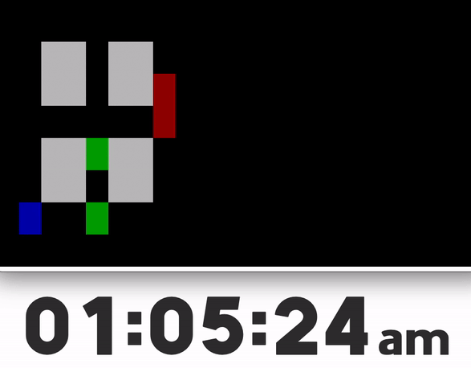
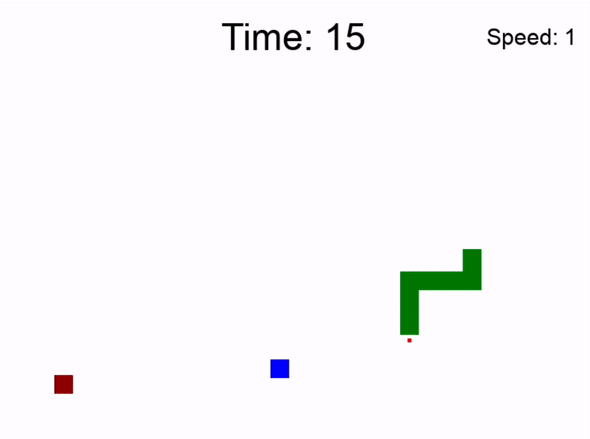
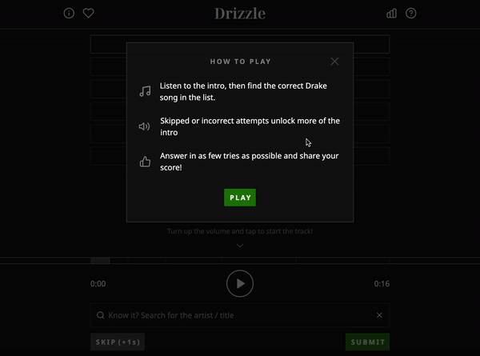
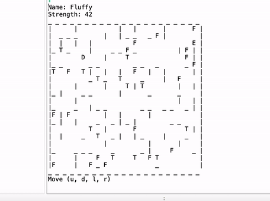

Nicholas Lago
│Dedicated student with a strong knowledge of computer science and experience teaching a college course. Passion for building a deeper understanding of software development. Eager to implement my skills and collaborate with others to succeed.
Education
20 year old student attending the University of Delaware. Pursuing a Bachelor of Science in Computer Science. Concentration in robotics and AI. Expected in May 2025.
Skills
◦ Python◦ Java
◦ C/C++
◦ HTML/CSS
◦ JavaScript
◦ Adobe Photoshop
◦ Adobe Illustrator

Projects │

Binary Clock
Clock using a binary system to display the real-world time.
Hours, minutes, and seconds are shown as either on or off values.
Made with C, Bash, and Git.
Project for CISC210 Introduction to Systems Programming.

Snake Game
A functioning snake game created with Python using Thonny IDE and designer library. Final project for CISC108 Introduction to Computer Science I.

Drizzle
Drizzle is my take on the popular online game Heardle.
Listen and identify the daily Drake song in as few tries as you can.
It is a remix of an original project found on Glitch.
I modified the CSS and JavaScript properties on the already coded foundation to make Heardle Drake themed.

Forest Escape
A maze game where you attempt to help the dog reach the end.
This project helped my understanding of object oriented coding and its relation to classes/matrices.
Made with C++.
Project for CISC220 Data Structures.
Portfolio Website
I created this website to learn more about frontend development.
To build this project I taught myself HTML, CSS, and JavaScript.